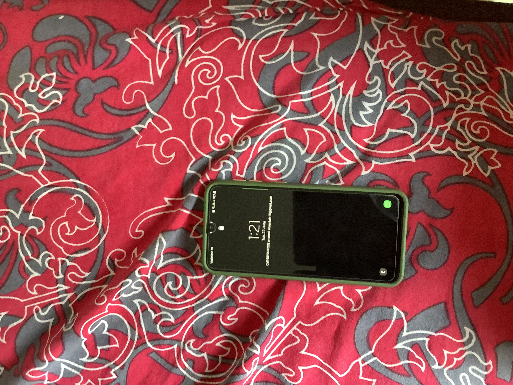
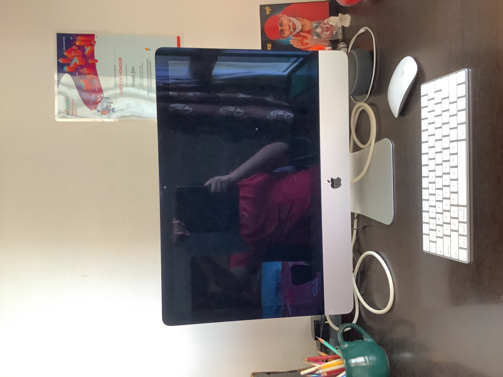
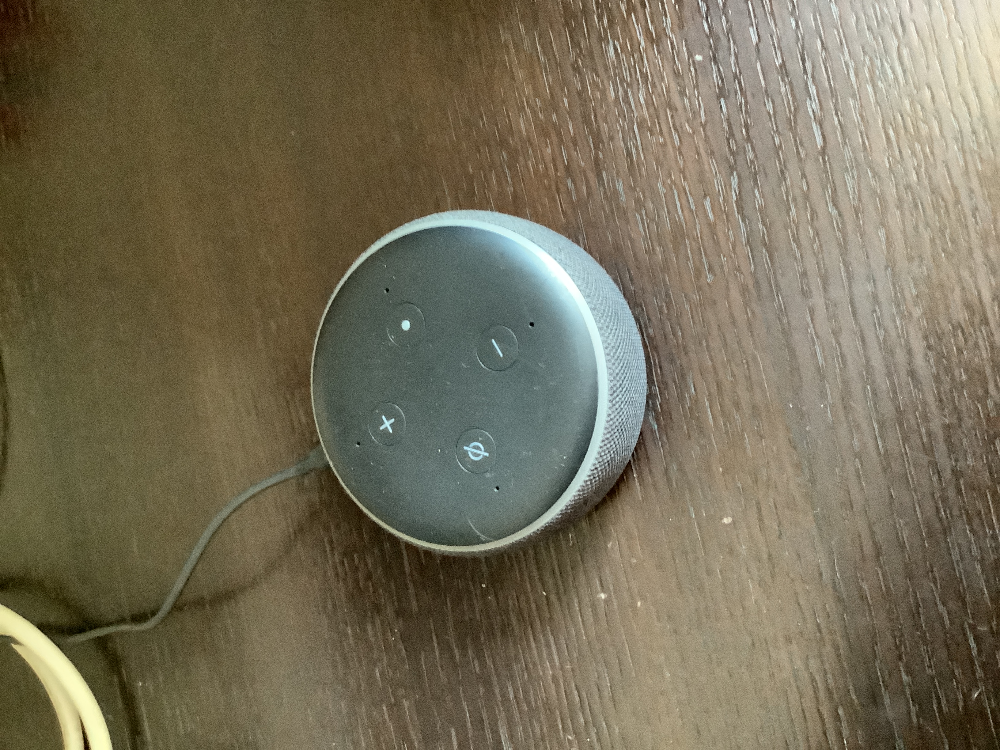
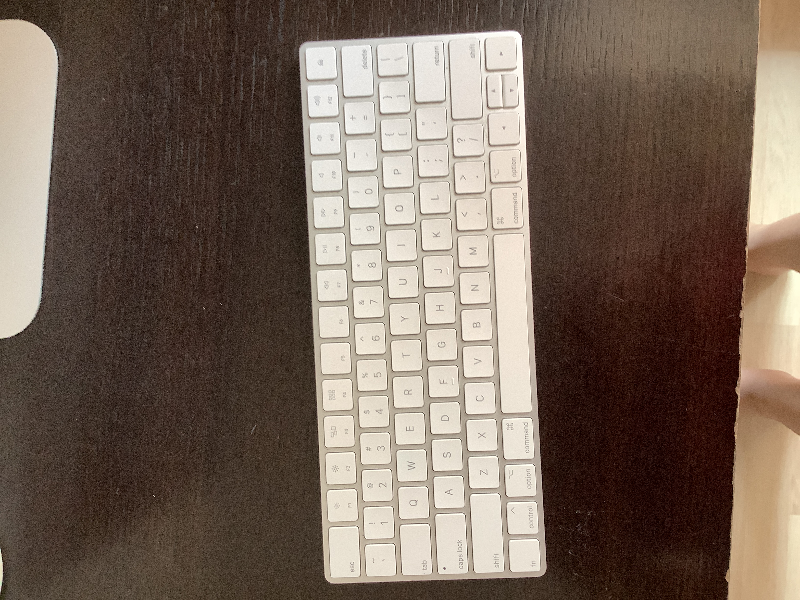
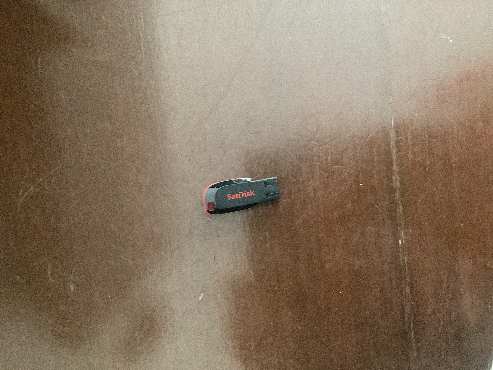

IMAGE: 
Output on Wolfram Project - laptop
Output on Mobilenet - loudspeaker, speaker, speaker unit, loudspeaker system, speaker system
Result:
Wolfarm Project is more accurate but not correct
IMAGE: 
Output on Wolfram Project - computer mouse
Output on Mobilenet - desktop computer
Result:
Mobilenet is more accurate
IMAGE: 
Output on Wolfram Project - colander
Output on Mobilenet - mouse, computer mouse
Result:
Mobilenet is more accurate but not correct
IMAGE: 
Output on Wolfram Project - computer keyboard
Output on Mobilenet - computer keyboard, keypad
Result:
Both are accurate
IMAGE: 
Output on Wolfram Project - paper clip
Output on Mobilenet - ballpoint, ballpoint pen, ballpen, Biro
Result:
None of them is accurate